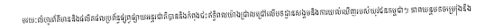
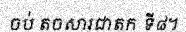
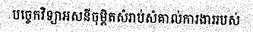
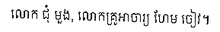
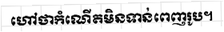

🎯 Accuracy Results
28.5%
Character-level
Accuracy
sample_0000
Ground Truth: មានខសង្កេតថា ដូច ដែលបានឃើញភស្តុតាង ការគោរពព្រះពុទ្ធសាសនាក្នុងសម័យអយុធ្យា មិនសូវជាប្រកាន់ខ្ជាប់នូវគោលធម៌ជាន់ខ្ពស់ប៉ុន្មានទេ
Prediction: មានខសសង្កេតថា ដូច ដែលបានឃើញកស្តុតាង ការគោរពព្រះពុទ្ធសាសនាក្ខុ
Length: 122 chars, 124 tokens |
Size: 973x32 px |
Match: ❌ Incorrect
sample_0001
Ground Truth: វីឌីអូកមឺរ៉ា មានលក្ខណៈទំនើប មានការរចនា និងប្រើប្រាស់ជាច្រើនអ្វីទាំងអស់មិនដូចវីឌីអូកាមឺរ៉ា ឡើយ។ ពិសេសកាមឺរ៉ា ទាំងនេះប្រើប្រាស់ក្នុង ផលិតកម្មទូរទស្សន៍
Prediction: វើឱីអូកមីរ៉ា មានលក្ខណៈទំនើប មានការរចនា និងប្រើប្រាស់ជា
Length: 148 chars, 150 tokens |
Size: 1314x32 px |
Match: ❌ Incorrect
sample_0002

Ground Truth: មរយៈលំហូរព័ត៌មាននិងផលិតផលប្រព័ន្ធផ្សព្វផ្សាយអន្តរជាតិបាននិងកំពុងជះឥទ្ធិពលយ៉ាងជ្រាលជ្រៅលើបទដ្ឋានសង្គមនិងការយល់ឃើញរបស់យុវជនកម្ពុជា។ ភាពយន្តបទចម្រៀងនិង
Prediction: មយយលំហូរពីមិនាននិងផលិតផលព្រព័ន្ធផ្សាវផ្សាយអន្តរជាតិបាននិងកំពុងជះឥទ្ធិពលយ៉ាងជ្រាលជ្រៅលើបតដ្ឋានសង្គនិងការយល់លើញរបស់យុវជនកម្ពជា។ គាតបន្តរបចម្រ
Length: 148 chars, 150 tokens |
Size: 549x32 px |
Match: ❌ Incorrect
sample_0003
Ground Truth: ត្តជាបន្តបន្ទាប់រាប់សតវត្សរ៍មកហើយ។ អក្សរខ្មែរដែលយើងប្រើប្រាស់សព្វថ្ងៃនេះមានដើមកំណើតចេញពីអក្សរព្រាហ្មណ៍នៃប្រទេសឥណ្ឌាខាងត្បូងហើយបានផ្លាស់ប្តូររូបរាងជា
Prediction: ត្តត្តជាបន្តបន្ទាប់រាប់សតវត្សរ៍មកហើយ។ អក្សរខ្មែរដែលយើងប្រើប្រាស់សព្វថ្ងៃ
Length: 148 chars, 150 tokens |
Size: 1134x32 px |
Match: ❌ Incorrect
sample_0004
Ground Truth: បែននិងការធ្វើការងារជាដំណាក់កាលខ្លីៗហៅថា។ វិធីសាស្ត្រនេះអនុញ្ញាតឱ្យក្រុមការងារអាចទទួលបានមតិកែលម្អពីអតិថិជនបានលឿននិងកែតម្រូវផលិតផលរបស់ខ្លួនជាបន្តបន្ទា
Prediction: បែបននិងការធ្វើការងារជាដំណាក់កាលខ្លីៗហៅថា។ វិធីសាស្ត្រនេះអ
Length: 148 chars, 150 tokens |
Size: 1320x32 px |
Match: ❌ Incorrect
sample_0005
Ground Truth: ម្នាលភិក្ខុទាំងឡាយ បុគ្គលជាសម្មាសមាធិ ឈ្មោះថា បានកំចាត់បង់មិច្ឆាសមាធិចេញហើយ ម្នាលភិក្ខុទាំងឡាយ បុគ្គលជាសម្មាញាណៈ ឈ្មោះថា
Prediction: ម្នាលភិក្ខុទាំងឡាយ បុគ្គលជាសម្មាសមាធិ ឈ្មោះថា បានកំចា
Length: 120 chars, 122 tokens |
Size: 1167x32 px |
Match: ❌ Incorrect
sample_0006
Ground Truth: រមែងមិនស្តាប់ មិនផ្អៀងត្រចៀកស្តាប់ មិនតាំងចិត្តប្រុងស្តាប់ ដើម្បីឲ្យដឹងច្បាស់ មានតែនាំគ្នាប្រព្រឹត្តគេចចេញ ចាកពាក្យប្រដៅរបស់គ្រូ បុរសចូលទៅរកស្ត្រី
Prediction: រមែងមិនស្តាប់ មិនផ្អៀងត្រចៀកស្តាប់ មិនតាំងចិត្តប្រុងស្តាប់ ដើម្បីឲ្យដឹងច្បាស មានតែនាំគ្នាប្រព្រឹត្តគេចចេញ ចាកពា
Length: 146 chars, 148 tokens |
Size: 698x32 px |
Match: ❌ Incorrect
sample_0007
Ground Truth: ដឹងថាអ្នកណាជាអ្នកប្រព្រឹត្ត ហើយមិនបានចាត់វិធានការដើម្បីពិន័យឧក្រិដ្ឋជន ឬមួយក៏ដើម្បីរកយុត្តិធម៌ជូនគ្រួសារជនរងគ្រោះអី។
Prediction: ដឹងថាអ្នកណាជាអ្នកប្រព្រឹត្ត ហើយមិនបានចាត់វិធានការដើម្បីពិន័យឧក្រិដ្ឋជន ឬមួយក៏ដើម្បីរកយុត្តិធម៌ជូនគ្រុ
Length: 116 chars, 118 tokens |
Size: 622x32 px |
Match: ❌ Incorrect
sample_0008
Ground Truth: ដូច្នេះនេះ យើងបានពោលហើយ ពាក្យនុ៎ះ ដែលយើងពោលហើយ ព្រោះអាស្រ័យហេតុអ្វី។ ម្នាលនាង ភិក្ខុក្នុងសាសនានេះ បានឮដំណឹងថា ភិក្ខុឈ្មោះនេះ បានធ្វើឲ្យជាក់ច្បាស់
Prediction: ដូច្ចេច្នេះនេះ យើងបានពោលហើយ ពាក្យនុ៎ះ ដែលយើងពោលហើយ ព្រោះអា
Length: 145 chars, 147 tokens |
Size: 1175x32 px |
Match: ❌ Incorrect
sample_0009
Ground Truth: ក្នុងយុគសម័យឌីជីថលការផ្សាយពាណិជ្ជកម្មនិងយុទ្ធសាស្ត្រទីផ្សារបានឆ្លងកាត់បរិវត្តកម្មយ៉ាងជ្រាលជ្រៅដែលតម្រូវឱ្យសហគ្រាសនានាក្នុងព្រះរាជាណាចក្រកម្ពុជាត្រូវ
Prediction: ក្នុងយុគសម័យឌីជីថលការផ្សាយពាណិឫ្កកម្មនិងយុទ្ធសាស្ត្រទីផ្សារបានឆ្លងកាតបរិវត្តកម្មយា
Length: 148 chars, 150 tokens |
Size: 914x32 px |
Match: ❌ Incorrect
sample_0010

Ground Truth: ចិត្តគេត្រូវធ្វើឲ្យមានអារម្មណ៍ខ្ពស់ឯកយ៉ាងនេះ ចិត្តគេត្រូវតាំងឲ្យនឹងធឹង យ៉ាងនេះ ឯភិក្ខុនោះ លុះសម័យខាងក្រោយមក រមែងបាននូវអធិប្បញ្ញាធម្មវិបស្សនាផង
Prediction: ចិចិត្តគេត្រូវធ្វើឲ្យមានអារម្មណ៍ខ្ពស់ឯកយ៉ាងនេះ ចិត្តគេត្រូវ
Length: 142 chars, 144 tokens |
Size: 1356x32 px |
Match: ❌ Incorrect
sample_0011
Ground Truth: អាស្រ័យនៅនឹងសេនាសនៈដ៏ស្ងាត់ គឺព្រៃ ម្លប់ឈើ ភ្នំ ញកភ្នំ គុហាក្នុងភ្នំ ព្រៃស្មសាន ដងព្រៃ ទីវាល គំនរចំបើង។ ពួកព្រាហ្មណ៍ និងគហបតីក្តី អ្នកនិគមក្តី
Prediction: អាស្រ័យនៅនឹងសេនាសនៈដ៏ស្ងាត់ គឺព្រៃ ម្លប់ឈើ ខ្នំ ញកភ្នំ គុហាក្នុងក្នំ ព្រៃស្មុសាន ដងព្រៃ ទីរាល គំនរចំបើង។ ពួកព្រាហ្មណ៍ និងគហ
Length: 142 chars, 144 tokens |
Size: 594x32 px |
Match: ❌ Incorrect
sample_0012
Ground Truth: កសិកម្មធម្មជាតិនិងគ្មានសារធាតុគីមីកំពុងក្លាយជាវិស័យដ៏មានសក្តានុពលមួយនៅក្នុងសេដ្ឋកិច្ចកម្ពុជា។ការយល់ដឹងរបស់ប្រជាពលរដ្ឋអំពីផលប៉ះពាល់នៃសារធាតុគីមីកសិក
Prediction: កសសិកម្មធម្មជាតិនិងគ្មានសារធាតុគឺមីកំពុងក្លាយជាវិស័យដ៏មានសក្តានុពលមួយនៅក្នុ
Length: 147 chars, 149 tokens |
Size: 1025x32 px |
Match: ❌ Incorrect
sample_0013
Ground Truth: [១៩៩] ពាក្យថា ដោយធម៌ណា គឺដោយវត្ថុដែលពិតប្រាកដ។ ពាក្យថា ដោយវិន័យណា គឺដាស់តឿនក្រើនរំលឹក។ ពាក្យថា ដោយពាក្យប្រៀនប្រដៅរបស់ព្រះសាស្តាណា គឺដោយញត្តិសម្បទាន
Prediction: [១១៩៩] ពាក្យថា ដោយធម៌ណា គឺដោយវត្ថុដែលពិតប្រាកដ។ ពាក្យថា ដោ
Length: 147 chars, 149 tokens |
Size: 1247x32 px |
Match: ❌ Incorrect
sample_0014

Ground Truth: ចប់ តចសារជាតក ទី៨។
Prediction: ចប់ តចសារជាតក ទីផ។
Length: 18 chars, 20 tokens |
Size: 186x32 px |
Match: ❌ Incorrect
sample_0015
Ground Truth: ត្រូវបានបញ្ជូនទៅមន្ទីរពេទ្យបង្អែក។ មន្ទីរពេទ្យបង្អែកនៅតាមខេត្តមានសមត្ថភាពខ្ពស់ជាងមណ្ឌលសុខភាព។ មន្ទីរពេទ្យទាំងនេះមានគ្រូពេទ្យឯកទេសនិងឧបករណ៍ទំនើបជាងមុ
Prediction: ត្រូវូវបានបញ្ជូនទៅមន្ទីរពេទ្យបង្អែក។ មន្ទីរពេទ្យបង្អែកនៅ
Length: 148 chars, 150 tokens |
Size: 1474x32 px |
Match: ❌ Incorrect
sample_0016
Ground Truth: ពួកយួនខាងត្បូង ខាងជើង និងរ.រ.ជ.បានប្រកាសបរិហារយ៉ាងខ្លាំងក្លានូវសកម្មភាពដ៏អាក្រក់ក្រៃលែងទាំងនេះ។ ជាការសំខាន់ មិនមានពួកខ្មែរ មិនថាតែសហគមន៍ពុទ្ធសាសនាឡើ
Prediction: ពួកយួនខាងត្បូង ខាងជើង និងរ ជេ បានប្រកាសបរិហារយ៉ាងខ្លាំងក្លានូវសកម្មភាពដ៏អាក្រក់ក្រៃលែងទាំងនេះ។
Length: 148 chars, 150 tokens |
Size: 818x32 px |
Match: ❌ Incorrect
sample_0017

Ground Truth: បច្ចេកវិទ្យាអសនីចុម្ពិតសំរាប់សំគាល់ការងាររបស់
Prediction: បច្ចេកវិទ្យាអសនីចុម្ពិតសំរាប់សំគាល់ការងាររបស់
Length: 45 chars, 47 tokens |
Size: 253x32 px |
Match: ✅ Correct
sample_0018
Ground Truth: បពិត្រព្រះមានព្រះភាគ ខ្ញុំព្រះអង្គសូមសំដែងធម៌ បពិត្រព្រះសុគត ខ្ញុំព្រះអង្គសូមសំដែងធម៌។ ព្រះមានព្រះភាគ ទ្រង់ត្រាស់ថា ម្នាលវង្គីសៈ អ្នកចូរសំដែងធម៌ចុះ។
Prediction: បពិត្រព្រះមានព្រះភាគ ខ្ញុំព្រះអង្គសូរសំដែងធម៌ មពិត្រព្រះសុគត ខ្ញុំព្រះអង្គសូបសំដែងធម៌។ ព្រះមានព្រះភាគ ទ្រង់
Length: 148 chars, 150 tokens |
Size: 713x32 px |
Match: ❌ Incorrect
sample_0019
Ground Truth: ដោយមានអតីតព្រះមហាក្ស័ត្របាវដាយជាប្រមុខ។
Prediction: ដោយមានអតីតព្រះមហាក្ស័ត្របាវដាយជាប្រមុខ។
Length: 39 chars, 41 tokens |
Size: 383x32 px |
Match: ✅ Correct
sample_0020

Ground Truth: អង្គអគ្គសេនាមាត្យ ក៏យល់ព្រមតាមព្រះរាជតំរិះ។ ព្រះបាទបរមនាថ បរមបពិត្រកាលបើទ្រង់យល់ថា : អង្គអគ្គសេវកាមាត្យ ព្រមព្រៀងដូច្នេះហើយ
Prediction: អង្គអគ្គសេនាមាត្យ ក៏យល់ព្រមតាមព្រះរាជតំរិះ។ ព្រះបាទបរមនាថ
Length: 123 chars, 125 tokens |
Size: 1070x32 px |
Match: ❌ Incorrect
sample_0021
Ground Truth: ធ្វើឲ្យសាសនាហិណ្ឌូកម្រើកខ្លួនឡើងវិញបាននៅពេលខាងក្រោយ។
Prediction: ធ្វើឲ្យសាសនាហិណ្ឌកម្រើកខ្លួនឡើងវិញបាននៅពេលខាងក្រោយ។
Length: 52 chars, 54 tokens |
Size: 498x32 px |
Match: ❌ Incorrect
sample_0022
Ground Truth: ជាច្រើនបានហៅថា វីហ្គាស បួកនិងឌីវីឌី ដែលអាចរកបាន នៅពេលដែល ម៉ាក 7.បាន
Prediction: ក៏ចុច្រេត ១-- ហើយ ព្រោស្ត ( ក្រុង ឯងជា ( គេណាតិត្តា (ជា (- ការចាលការពេញ () (-
Length: 67 chars, 69 tokens |
Size: 498x32 px |
Match: ❌ Incorrect
sample_0023
Ground Truth: ជាសិទ្ធិសេដ្ឋកិច្ចសង្គមកិច្ចនិងវប្បធម៌។ មាត្រា៣១នៃរដ្ឋធម្មនុញ្ញបានបញ្ញត្តិយ៉ាងច្បាស់ថាព្រះរាជាណាចក្រកម្ពុជាទទួលស្គាល់និងគោរពសិទ្ធិមនុស្សដូចមានចែង
Prediction: ជាសិទ្ធិសេដ្ឋកិច្ចសង្គមកិច្ចនិងឲ្យធម៌។ ពាត្រាពានៃរដ្ឋធម្មនុញ្ញបានបញ្ញត្តីយ៉ាងគ្នាល់ជាព្រះរាជាណាចត្រកម្មជាទទួលស្តាល់និងគោរពស់ទ្ធិចនុស្សដូចមានផែង
Length: 145 chars, 147 tokens |
Size: 488x32 px |
Match: ❌ Incorrect
sample_0024

Ground Truth: លោក ជុំ មួង, លោកគ្រូអាចារ្យ ហែម ចៀវ។
Prediction: លោក ជុំ មួង, លោកគ្រួអាចារ្យ ហែម ចៀវ។
Length: 36 chars, 38 tokens |
Size: 220x32 px |
Match: ❌ Incorrect
sample_0025
Ground Truth: ជ្រាវត្រូវកំណត់បញ្ហាឱ្យបានជាក់លាក់ដើម្បីអាចរៀបចំដំណើរការស្វែងរកចម្លើយប្រកបដោយប្រព័ន្ធ។ ជំហានដំបូងនេះមានសារៈសំខាន់ណាស់ព្រោះវាជាមូលដ្ឋានគ្រឹះសម្រាប់ដំ
Prediction: ជ្រាវត្រូវកំណត់បញ្ហាឱ្យបានជាក់លាក់ដើម្បីអាចរៀបចំដំណើរការស្វែងរក
Length: 148 chars, 150 tokens |
Size: 1174x32 px |
Match: ❌ Incorrect
sample_0026
Ground Truth: និងព្រះអាទិត្យទាំងពីរនោះតែងកំចាត់បង់នូវងងឹត ត្រាច់ទៅក្នុងអាកាស ភ្លឺក្នុងអាកាស រុងរឿងសព្វទិសទ្រព្យណាដែលមានក្នុងចន្លោះនុ៎ះ គឺកែវមុក្តា កែវមណី
Prediction: និងព្រះអាទិត្យទាំងពីរនោះតែងកំចាត់បង់នូវងងឹត ត្រាច់ទេ
Length: 139 chars, 141 tokens |
Size: 1316x32 px |
Match: ❌ Incorrect
sample_0027
Ground Truth: នេះនឹងទុកកិត្តិយសឱ្យហៅថា ចៅពញា ដូចពញាអរជូននេះឱ្យគង់យសជាស្តេចតទៅទៀតមិនបានឡើយព្រោះវាកំរើកចិត្តណាស់។ ទើបទ្រង់ត្រាស់បង្គាប់តែងព្រះរាជបញ្ជាជាថ្មីថា :
Prediction: នេះនឹងទុកកិត្តិយសឱ្យហៅថា ចៅពញា ដូចពញាអរជូននេះេេ
Length: 144 chars, 146 tokens |
Size: 1485x32 px |
Match: ❌ Incorrect
sample_0028
Ground Truth: ជាអ្នកមិនមានសេចក្តីបៀតបៀន មានសញ្ញាមិនប្រកបដោយសេចក្តីបៀតបៀន។ បពិត្រព្រះអង្គដ៏ចម្រើន កាលបើបុគ្គលសេព នូវការបានចំពោះសញ្ញា មានសភាពយ៉ាងនេះ ពួកអកុសលធម៌
Prediction: ជាអារម្នកបាននាងនាមការីចំបៀតហៀន មានសាញានន្យការជាបារសេចជីចៀតហ៊ីន។ ការ
Length: 144 chars, 146 tokens |
Size: 1116x32 px |
Match: ❌ Incorrect
sample_0029
Ground Truth: បសគ្គភូមិសាស្ត្រតាមរយៈការសាងសង់គម្រោងហេដ្ឋារចនាសម្ព័ន្ធខ្នាតមហិមាដែលគួរឱ្យស្ញប់ស្ញែង។ឧទាហរណ៍ជាក់ស្តែងរួមមានផ្លូវរូងក្រោមភ្នំដ៏វែងអន្លាយដែលកាត់ទម្លុះ
Prediction: បស់គគ្គភូមិសាស្ត្រតាមរយៈការសាងសង់គម្រោងហេដ្ឋារចនាសម្ព័ន្ធ
Length: 148 chars, 150 tokens |
Size: 1277x32 px |
Match: ❌ Incorrect
sample_0030
Ground Truth: ខ្ញុំកណាថ្វាយគារវកិច្ច លូនចូលទៅចាប់ពាល់ព្រះវរកាយរហូតដល់ព្រះអង្គចេញពីសមាធិ បើកព្រះនេត្រឡើង ខ្ញុំកណាបានក្រាបទូលឲ្យព្រះអង្គជ្រាបថា
Prediction: ខ្នុំកណាថ្វាយតារវកិច្ច លួនចូលទៅចាប់ពាល់ព្រះរកាយរហូតដល់ព្រះអង្គចេញពីសមាធិ បើកព្រះនេត្រឡើង ខ្ញុំកណាបានក្រា
Length: 127 chars, 129 tokens |
Size: 632x32 px |
Match: ❌ Incorrect
sample_0031
Ground Truth: និយាយនឹងនាងធនញ្ជានីព្រាហ្មណី យ៉ាងនេះថា មេចង្រៃនេះ ធ្លាប់តែឯចឹងៗ ហ៊ានពោលសរសើរសមណៈត្រងោល ក្នុងទីផ្តេសផ្តាស នែមេចង្រៃ អញនឹងលើកនូវវាទៈ [អញនឹងលើកនូវវាទៈ
Prediction: នាំងនិយាយនិងនាង់ទេញពួរមិព្រាហ្មណ៍ យ៉ាងនេះហា មេចារដែងនេះ រួល
Length: 147 chars, 149 tokens |
Size: 1414x32 px |
Match: ❌ Incorrect
sample_0032
Ground Truth: ភ្លើងគឺលោភៈ តណ្ហានិងឧបាទាន ឲ្យអស់តែប៉ុណ្ណោះ មិនមានចិត្តប្រាថ្នា អ្វីអំពីទាននោះឡើយ គឺមានចិត្តត្រេកអរ ចំពោះតែត្រង់បាន ធ្វើទាននេះ១ ត្រេកអរចំពោះ បុគ្គល
Prediction: ភ្លភ្លើងគឺលោភៈ ភណ្ហានិងឧបាទាន ឲ្យអស់តែប៉ុណ្ណោះ មិនមា
Length: 147 chars, 149 tokens |
Size: 1375x32 px |
Match: ❌ Incorrect
sample_0033
Ground Truth: ឌីជីថលដែលប្រែប្រួលឥតឈប់ឈរ។ការធ្វើអន្តរកម្មភ្លាមៗនិងការផ្សព្វផ្សាយព័ត៌មានក្នុងកម្រិតសកលបានក្លាយជាបទដ្ឋានថ្មីដែលជះឥទ្ធិពលយ៉ាងជ្រាលជ្រៅដល់វកម្មនយោបាយនិ
Prediction: ឌីជីថលដែលប្រែប្រួលឥតឈប់ឈរ។ការធ្វើអន្តរកម្មភ្លាម
Length: 148 chars, 150 tokens |
Size: 1510x32 px |
Match: ❌ Incorrect
sample_0034
Ground Truth: វិជ្ជានេះមានតំលៃសំខាន់ក្រោយពីមានគ្រោះមហន្តរាយ ឧទាហរណ៍ដូចជាការបាក់ស្ពាន ក្នុងការវិភាគរកមូលហេតុដែលបណ្តាលឱយមាន។
Prediction: ប្រការបានប្រាប់ប្រាប់ប្រាប់ប្រាប់ប្រាប់ ប្រាប់ ប្រាប់ ប្រាប់ ប្រាប់ ប្រាប់ ប្រាប់ និង មានប្រាប់ និង មានប្រាប់ និង មានចំពីរប្រាប់ មាន
Length: 108 chars, 110 tokens |
Size: 1021x32 px |
Match: ❌ Incorrect
sample_0035
Ground Truth: ធ្វើល្អបានល្អ,ធ្វើអាក្រក់បានអាក្រក់។ ការរក្សាសីលប្រាំជាគោលការណ៍មូលដ្ឋានក្នុងការរស់នៅឲ្យមានសេចក្តីសុខ។ ព្រះធម៌របស់ព្រះសម្មាសម្ពុទ្ធអប់រំមនុស្សឲ្យចេះ
Prediction: ធ្វើល្យបានល្អធ្វើអាក្រក់បានអាក្រក់។ ការរក្សាសីលប្រាំជាគោលការណ៍មូលដ្ឋានក្នុងការរស់នៅឲ្យមានសេចក្តីសុខ។ ព្រះធម៌របស់ព្រះស
Length: 147 chars, 149 tokens |
Size: 635x32 px |
Match: ❌ Incorrect
sample_0036
Ground Truth: វិធីបង្កក់ឆ្មប ក្នុងកិច្ចសម្រាលកូន (ចុះផ្សាយក្នុងកម្ពុជសុរិយា)
Prediction: វិធីបង្កក់ច្មប ក្នុងកិច្ចសម្រាលកូន (ចុះផ្សាយក្នុងកម្ពុជសុរិយា)
Length: 62 chars, 64 tokens |
Size: 325x32 px |
Match: ❌ Incorrect
sample_0037
Ground Truth: ដែរ។ គុណសម្បត្តិចម្បងរបស់ពួកលោកគឺសេចក្តីក្លាហានការហ៊ានលះបង់ប្រយោជន៍ផ្ទាល់ខ្លួននិងការមានទស្សនវិស័យវែងឆ្ងាយសម្រាប់អនាគតនៃប្រជាជាតិ។ រឿងរ៉ាវរបស់មហាបុរស
Prediction: ដែរ។ គុណសម្បត្រិចម្បងរបស់ពួកលោកគឺសេចក្តីក្លាហានការហ៊ានលះបង់ប្របេ
Length: 148 chars, 150 tokens |
Size: 1223x32 px |
Match: ❌ Incorrect
sample_0038
Ground Truth: ចំណែកព្រះសរីរធាតុរបស់ព្រះមានព្រះភាគ មិនមានទេ ព្រះសរីរធាតុទាំងឡាយ របស់ព្រះមានព្រះភាគ យើងចែកគ្នាអស់ហើយ ចូរអ្នកទាំងឡាយ នាំយកព្រះអង្គារ (ធ្យូង) អំពីក
Prediction: ចំំណែកព្រះសរីរធាតុរបស់ព្រះមានព្រះភាគ មិនមានទេ ព្រះសរីរធាតុទាំងឡាយ
Length: 145 chars, 147 tokens |
Size: 1087x32 px |
Match: ❌ Incorrect
sample_0039
Ground Truth: [អាចារ្យខ្លះថា ព្រះអង្គមានព្រះនេត្រល្អ។ អដ្ឋកថា។] ព្រះមានព្រះភាគ មានសម្បុរដូចជាមាស មានព្រះទាឋា សសុទ្ធ មានព្យាយាម ព្រោះថាមហាបុរិសលក្ខណៈទាំងអស់នោះ
Prediction: ប្រាការ្យៈ ថា ព្រះអយបានព្រះនេត្រឈ។ អាតជា។] ព្រះមានព្រះភាគ មានសម្បុរដូចជាមាត មានព្រះទាថា តសុម មាន
Length: 144 chars, 146 tokens |
Size: 739x32 px |
Match: ❌ Incorrect
sample_0040

Ground Truth: ហៅថាកំណើតមិនទាន់ពេញរូប។
Prediction: ហៅថាកំណើតមិនទាន់ពេញរូប។
Length: 23 chars, 25 tokens |
Size: 224x32 px |
Match: ✅ Correct
sample_0041
Ground Truth: គឺលើកលែងតែមានសម័យ។ ភិក្ខុនីមិនអាចទៅទទួលឱវាទឬទៅនៅរួមសង្ឃកម្មបាន ហៅថាមានជម្ងឺ។
Prediction: គឺលើកលែងតែមានសម័យ។ ភិក្ខុនីមិនអាចទៅទទួលឱវាទឬទៅនៅរួមសង្ឃកម្មបាន ហៅថាម
Length: 76 chars, 78 tokens |
Size: 573x32 px |
Match: ❌ Incorrect
sample_0042
Ground Truth: ភាគច្រើនរបស់ប្រទេសដែលរួមចំណែកយ៉ាងធំធេងដល់ការធ្វើពាណិជ្ជកម្មជាមួយដៃគូអន្តរជាតិ។ក្រៅពីនេះនៅមានកំពង់ផែផ្សេងៗទៀតក្នុងខេត្តកោះកុងនិងកំពតដែលបម្រើឱ្យចរាចរ
Prediction: ភាគច្រើនរបស់ប្រទេសដែលរួមចំណែកយ៉ាងធំផេងដល់ការធ្វើពាណិជ្ជកម្មជាមួយដៃគូអន្តរជាតិ។ក្រៅពីនេះនៅមានកំពង់ដែផ្សេងៗទៀកក្នុងខេត្តកោ
Length: 147 chars, 149 tokens |
Size: 641x32 px |
Match: ❌ Incorrect
sample_0043
Ground Truth: អដ្ឋិធាតុរបស់ព្រះអង្គ ព្រះបាទបក្សីចាំក្រុងជាកូនបានយកទៅតម្កល់ទុកគោរពបូជានៅក្នុង ប្រាសាទលលៃ។
Prediction: អដ្ឋិធាតុរបស់ព្រះអង្គ ព្រះបាទបក្សីចាំក្រុងជាកូនបានយកទៅតម្កល់ទុ
Length: 90 chars, 92 tokens |
Size: 804x32 px |
Match: ❌ Incorrect
sample_0044
Ground Truth: ស្រែកហ៊ោរកញ្ជ្រៀវយ៉ាងសប្បាយ។ បរិយាកាសពិតជាអ៊ូអរនិងរំភើបខ្លាំងណាស់។ នៅពេលមើលបាល់ទាត់យើងចូលចិត្តញ៉ាំអាហារសម្រន់ជាច្រើនមុខ។ មានដូចជាសាច់មាន់បំពងប្រហិត
Prediction: ស្រែែហហ៊ារកញ្ជ្រ៉ៃវយ៉ាងសប្បាយ។ បរិយាកាសពិតជាអ៊ីអរនិងរំភើ
Length: 147 chars, 149 tokens |
Size: 1374x32 px |
Match: ❌ Incorrect
sample_0045
Ground Truth: បញ្ញាជាគ្រឿងញ៉ាំងកេរ្តិ៍ឈ្មោះ និងលាភសក្ការៈឲ្យចម្រើន នរជនប្រកបដោយបញ្ញា ក្នុងលោកនេះ សូម្បីទុក្ខ (កើតឡើង) ក៏រមែងបានសុខទាំងឡាយវិញ។ មួយទៀត បុគ្គលណាមួយ
Prediction: បញ្ញញ្ជាជាគ្រឿងញ៉ាំងកេរ្តីឈ្មោះ និងលាកសក្ខារៈឲ្យធម្រើន ៣រេនប្រ
Length: 146 chars, 148 tokens |
Size: 1316x32 px |
Match: ❌ Incorrect
sample_0046
Ground Truth: ប្រើបច្ចេកវិទ្យាទំនើបដើម្បីរក្សាទុកចំណេះដឹងទាំងនេះ។ យើងអាចថតរូបឬថតវីដេអូអំពីរបៀបធ្វើនិងរបៀបប្រើឧបករណ៍ទាំងនោះ។ បន្ទាប់មកយើងអាចបង្ហោះវានៅលើអ៊ីនធឺណិតឬ
Prediction: ប្រើបច្ចេកវិទ្យាទំនើបដើម្បីរក្សាទុកចំណេះដឹងទាំងនេះ។ យើងអាចថតរូបឬចតីរេះអូអំពីរបៀបធ្វើនិងរបៀបប្រើនបករណ៍ទាំងនោះ។ បន្ទា
Length: 147 chars, 149 tokens |
Size: 682x32 px |
Match: ❌ Incorrect
sample_0047
Ground Truth: ស៊ីជម្រៅអំពីជីវិតការងារនិងក្តីស្រមៃត្រូវបានចែករំលែកគ្នាបង្កើតបានជាអនុស្សាវរីយ៍ដ៏មានន័យ។ក្រៅពីសកម្មភាពកីឡាទំនើបក្នុងទីក្រុងនិន្នាការនៃការកម្សាន្តបែប
Prediction: ស៊ីជម្រៅអំពីជីវតការងារនិងក្តីស្រមៃត្រូវបានចែករំលែកគ្នាបង្កើតបានជាអនុស្សាចរីយ៍ដ៏មានន័យ។ក្រៅពីស
Length: 147 chars, 149 tokens |
Size: 790x32 px |
Match: ❌ Incorrect
sample_0048
Ground Truth: នៅទ្វីបអាមេរិក និងតំបន់ខ្លះ នៅអាស៊ី (ហ្វីលីពីន) និង អាហ្វ្រិក ដូច្នេះ ភាសារបស់អាណាចក្រនេះ បានជាភាសាអេស្ប៉ាញ។ នៅពេល អាណានិកគមរបស់ អាណាចក្រអេស្ប៉ាញ
Prediction: នៅនៅទ្វីបអាមេរិក និងតំបន់ខ្លះ នៅអាស៊ី (ហ្វីលីពីន) និង អា
Length: 145 chars, 147 tokens |
Size: 1426x32 px |
Match: ❌ Incorrect
sample_0049
Ground Truth: ព្រះពុទ្ធបានបង្រៀនឱ្យយើងចេះជ្រើសរើស ពាក្យសម្តីសម្រាប់និយាយស្តីឱ្យដូចជាកសិករជ្រើសរើសគ្រាប់ពូជសម្រាប់ ដាំដុះ សាបព្រោះយ៉ាងនោះដែរ
Prediction: ព្រះពុទ្ធបានបង្រៀនឱ្យយើងចេះជ្រើសរើស ពាក្យសម្ពីសម្រាប់និយាយស្តីឱ្យដូចជាកសិករជ្រើសរើសត្រាប់ពូដសម្រាប់ នាំដុះ សាប
Length: 125 chars, 127 tokens |
Size: 600x32 px |
Match: ❌ Incorrect